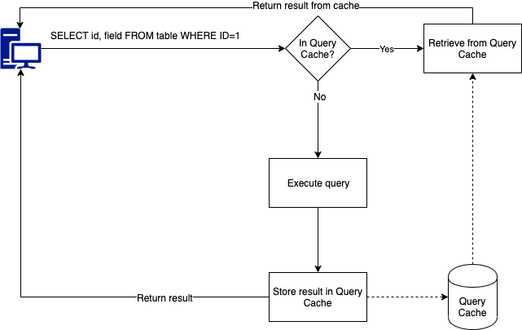

I've heard so many interviews in which the interviewers often ask about "How to stop the SQL injection," and the interviewees always answer the same thing: "Just parameterize the input or use the Stored Procedure." But most of them are speechless if they're asked, "Why can parameterization and stored procedures stop the SQLi?". Today, we'll answer that question.
Why can parameters stop SQL injection?
1. What is SQL injection?
Let's say you have a query to check for the user's authentication, like the following:
string query = "SELECT * FROM users WHERE account = '" + username + "' AND password = '" + password + "'";SQL injection means injecting a query into the request, as the simplest way is to inject it into the input fields. So a simple SQL injection would be just to put the "username" in as:
username = "' OR 1 = 1 --";This would effectively make the SQL query:
query = "SELECT * FROM users WHERE account = '' OR 1 = 1 --AND password = ''";Because 1 = 1 is always true, the -- commented out the rest of the query.
This way will give the hacker access to the system, WITHOUT ANY AUTHENTICATION. Furthermore, the
very first user of the users table can be the admin. So, the hacker is granted the highest privilege
in the system.
2. What is Parameterization?
Let's change the above query a little bit:
string query = "SELECT * FROM users WHERE account = ? AND password = ?";
parameters.Add("averyniceaccount", 1);
parameters.Add("asecuredpassword", 2);This way, the input values are treated as query parameters, not a part of the query. It's the same with the Stored Procedure.
CREATE STORED PROCEDURE user_authentication (
IN v_username VARCHAR(100),
IN v_password VARCHAR(100)
)
BEGIN
SELECT * FROM users WHERE account = v_username AND password = v_password;
ENDBut maybe you would disagree with me here.
The parameters will be concatenated to the query string anyway. It doesn't make sense!
Yeah, I thought the same when I was so young and tried to be a stupid genius. Let me tell you why.
3. How does the database treat the parameterized queries?
a. The query cache
Notice: In the example below, I'll work with SQL Server. There will be similar things in MySQL, OracleDB, or PostgreSQL.
There is a thing called Query hash in the database. In SQL Server, you can check out the query hash by using the following query:
SELECT TOP 1000 s.creation_time,
s.last_execution_time,
s.execution_count,
sql_text.text,
sql_plan.query_plan, query_hash
FROM sys.dm_exec_query_stats as s
CROSS APPLY sys.dm_exec_sql_text(s.sql_handle) as sql_text
CROSS APPLY sys.dm_exec_query_plan(s.plan_handle) as sql_planEach query has a different hash value. But you can see that it also stores the execution plan. Because the database is very lazy, it does not want to recalculate the execution plan if there's no change in the query. That's why you'll see a query can be very slow when executed for the first time, but then it's executed much faster.
How Databases use the cached execution plan
Different queries have different hash values. That means the following queries have different hash values and cannot reuse the execution plan from the other one:
SELECT * FROM dbo.Organizations WHERE Id = '1eb*******';
SELECT * FROM dbo.Organizations WHERE Id = '1cc*******';b. The parameters
I will change the above query a little bit:
DECLARE @orgId VARCHAR(100);
SET @orgId = '1cc*******';
SELECT * FROM [dbo].[Organizations] WHERE [Id]=@orgId;
SET @orgId = '1eb*******';
SELECT * FROM [dbo].[Organizations] WHERE [Id]=@orgId;And then check the cache, there is ONLY 1 HASH value for both queries. That means the query does not change. Only the parameters changed.
c. So what?
The above example shows that the Database separated the query and the parameters. It executes the query first, then the parameter is added to the query as the value, not string concatenation. This way, any injected queries won't be executed. Or in other words, PARAMETERIZATION STOPPED THE SQL INJECTION.
4. Conclusion
This is how parameterizations (PreparedStatement, StoredProcedure, etc) stop the SQL injection. But there are many other ways to attack the database out there. XSS is one of them, and parameterization cannot defend against it. There should be some more defense layers, such as RegEx, Data validation, etc, to protect your system.
Subscribe to my newsletter to read more about technical news and sharing, and if you have any ideas/advice for me, leave them in the comment section :D